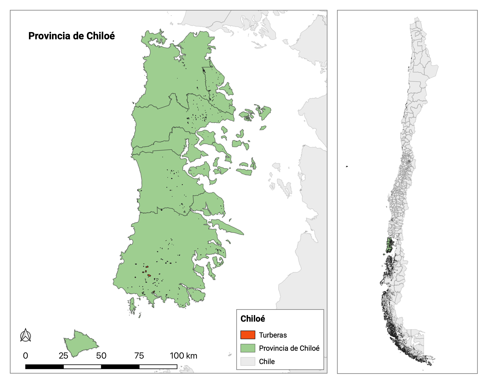
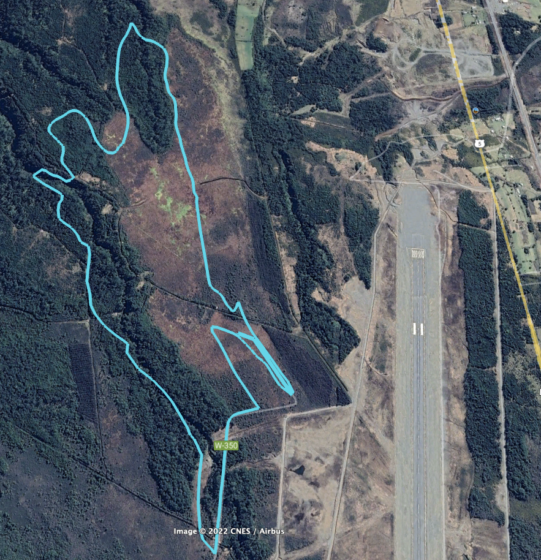
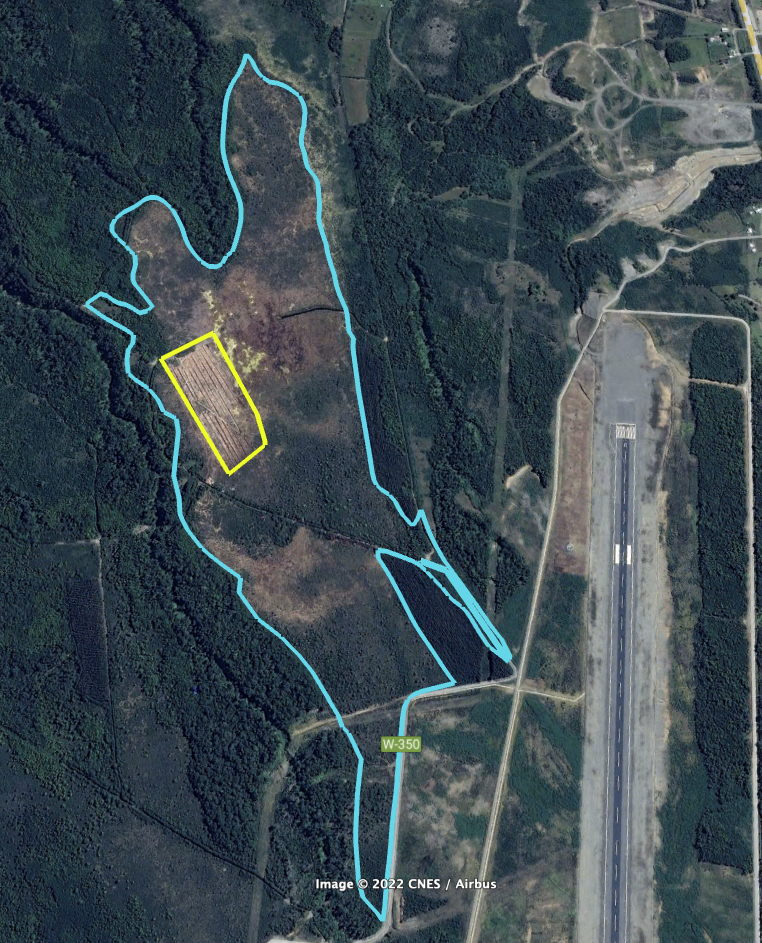

3 Área de Estudio y Data
3.1 Área de Estudio
La región de estudio corresponde a toda la provincia de Chiloé (Figure 3.1), en la Región de los Lagos, al sur de Chile (42°36′S 73°57′O). El Territorio de Chiloé es un archipiélago formado por más de treinta islas, con una extensión de 9.181 km². La Isla Grande tiene una longitud de 180 km de norte a sur y es principalmente en esta isla donde se encuentran las turberas antropogénicas objeto de estudio. La zona tiene un clima templado con fuerte influencia oceánica y presenta un periodo seco durante el verano (Di Castri, Hajek, et al. 1976). Según los datos de nueve años de la estación meteorológica SDBS, la temperatura media es de 10 °C y hay 2.110 mm de precipitaciones anuales (Carmona et al. 2010).

Históricamente las turberas tiene su origen en la tala y quema del bosque de tepú (Tepualia stipularis) ubicado en la zona, que dejó un suelo mal drenado colonizado por especies de Sphagnum sp. (Dı́az, Bigelow, and Armesto 2007). Se estima que la acumulación de materia orgánica comenzó en 1900 (León 2012). Las turberas son humedales en los que la materia orgánica se produce y deposita más rápidamente de lo que puede descomponerse, lo que da lugar a la formación de turba (Gore 1983). Los humedales son ecosistemas generados en zonas donde la presencia de agua produce suelos sometidos a procesos anaeróbicos, por lo que están dominados por una biota adaptada a las inundaciones (Keddy 2010). Estos ecosistemas ofrecen numerosos servicios ecosistémicos, como la depuración y el almacenamiento de agua dulce (Bullock and Acreman 2003) y ser importantes reservorios de carbono (C) (Zedler and Kercher 2005).
Considerando la importancia ecosistémica de las turberas y su degradación por acción humana, es necesario contar con un sistema de monitoreo. Una solución eficiente a través de imágenes satelitales en términos de temporalidad de captura de información y cobertura espacial. Teniendo en cuenta la ubicación geográfica de la región de estudio, esta se encuentra bajo condiciones climáticas nubosas durante gran parte del año, por lo tanto, las imágenes satelitales ópticas no son útiles. La alternativa idónea es el uso de imágenes satelitales tipo radar, que puedan captar información de la superficie bajo diferentes condiciones atmosféricas y tanto de día como de noche (Hecheltjen 2014).
3.2 Data
Tomando como base la delimitación de turberas realizada por el Ministerio del Medio Ambiente (MMA) en la provincia de Chiloé, se procedió a clasificarlas en dos categorías. En primer lugar, se identificaron las turberas que experimentaron cambios a lo largo del tiempo, y por otro lado, aquellas que se mantuvieron estables. Para realizar esta clasificación, se utilizó el proceso de fotointerpretación utilizando Google Earth Pro. Las turberas clasificadas como “cambio” registraron tanto la temporalidad del cambio como el tipo de alteración, ya sea por causas naturales o por actividad humana ( ver Figura ). En este estudio se utilizaron tanto turberas estables como aquellas que presentaron cambios debido a la acción humana, donde la temporalidad toma un rol importante el proceso de adquisición de imágenes satelitales.

